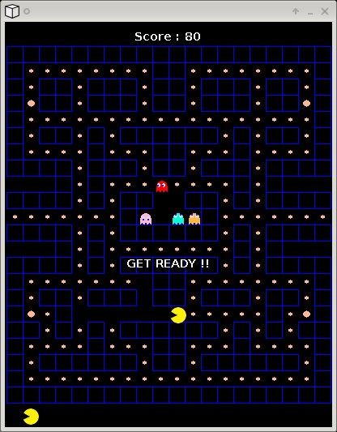

This is the game you all know. Not in a fancy version, for what it is... Just did it to play with the AI and to make a game I could actually play and lose.
Guess what ? it's ugly. I riped graphics from here and there, the ghosts are a little too small, the text is not a the best place, etc..
Sure. You'll need to install ruby, rake, SDL and the ruby/SDL binding.
They you grab the game here, you type
rake play
and that should be it.Okay, you can shout at phtrivier AT yahoo DOT fr, I might even be able to help. But I'm not planning on doing anything else on this.
Wait you really need documentation on PACMAN ??? Jezz.